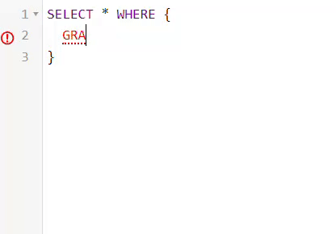

QuaDer : import and condense quads datasets
It stores:
- all resources or literals in a catalog.
- evolving quad datasets in a compressed form using bit vectors to represent the presence of quads across versions.
Query condensed versioned quads with QuaQue
- It supports SPARQL queries without introducing new operators, maintaining interoperability.
- QuaQue allows querying across multiple versions simultaneously using the condensed quad representation.
- The component uses the condensed representation to improve the execution of join and aggregation queries.
